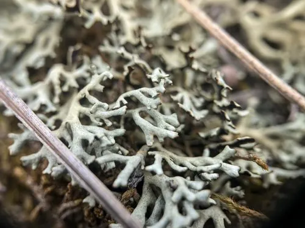

真菌 · 真菌界
黄梅衣 Xanthoparmelia camtschadalis

梅衣科地衣，地衣体黄绿至黄绿色、紧贴岩石或土壤生长，耐旱耐寒，常被用于监测大气与土壤环境。
- 分类
- 门子囊菌门纲茶渍纲目茶渍目科梅衣科属黄梅衣属
- 栖息环境
- 干旱草原、荒漠与高山的岩石、砾石与钙质土壤
- 地理分布
- 北半球温带至寒带干旱区分布，中国西北、蒙古、俄罗斯有记录
- 保护级别
- 暂无评估；生长缓慢，荒漠区采集压力需关注
物种志
黄梅衣的地衣体叶状，直径 2–6 厘米，裂片狭长、紧贴基质，表面黄绿至黄绿色，干燥时略呈革质，湿润时变软，边缘常具粉芽或裂芽。子囊盘少见，盘面褐色，边缘与地衣体同色。地衣体由真菌与藻类共生构成。
黄梅衣生于干旱草原、荒漠与高山岩石、砾石及钙质土壤上，耐旱、耐寒、耐强光，是北半球干旱区常见的地衣。它靠地衣体碎片与粉芽繁殖，生长极慢，每年仅增长数毫米。在荒漠生态中，地衣结皮能固定沙土、减少风蚀，是重要的地表覆盖层。地衣对空气污染物与重金属敏感，可作为大气沉降与土壤环境的生物监测材料；它不供食用，采集时应注意保护，避免在保护区大规模剥离。
形态与习性
- 地衣体叶状，直径 2–6 厘米，黄绿色紧贴基质
- 繁殖地衣体碎片与粉芽，生长极慢
- 生境干旱区岩石、砾石与钙质土壤
- 耐性耐旱、耐寒、耐强光
- 用途大气与土壤环境的生物监测
- 食用性不供食用，采集需注意保护
趣味知识
- 黄梅衣能牢牢贴在岩石上，靠的是地衣体下表面的假根与黏附物质。
- 它每年只长几毫米，一块巴掌大的地衣可能已经生长了几十年。
- 地衣能富集空气中的重金属与污染物，因此被用来监测环境质量。
- 在荒漠与草原，地衣是固定土壤、减少风蚀的重要角色。